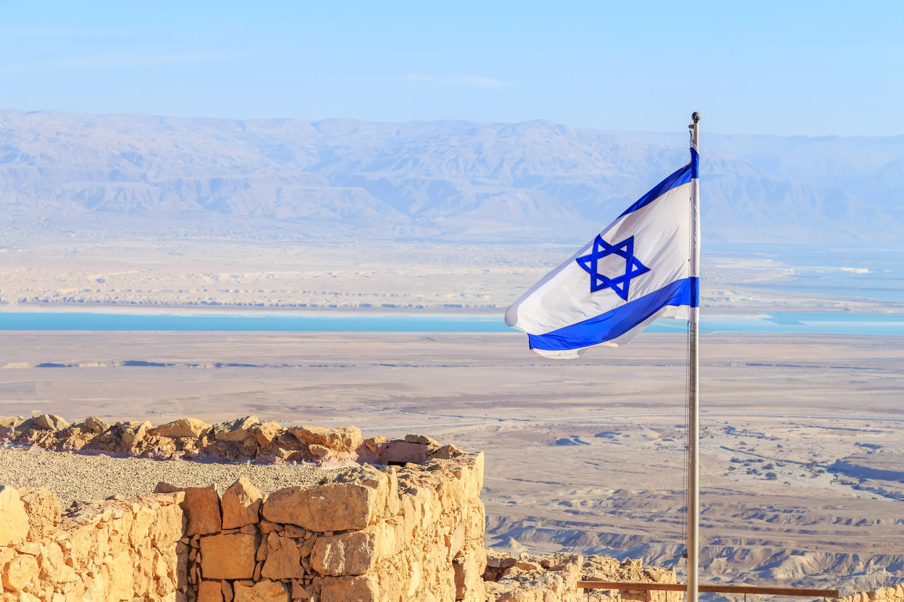
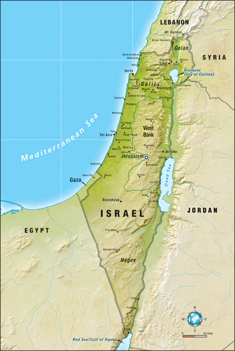

Most Popular Cities in Israel
Where Should You Visit?
Israel is a fascinating country with a rich history and vibrant culture. Here are the 3 most popular cities to visit when exploring this amazing destination.
Tel Aviv
Tel Aviv is Israel's largest metropolitan area and a hub of modern innovation. Known for its beautiful Mediterranean beaches, vibrant nightlife, and thriving tech industry, Tel Aviv offers a perfect blend of ancient history and contemporary culture.
For more about Tel Aviv, click here
Jerusalem
Jerusalem is one of the world's oldest and most historically significant cities. As a holy city for Judaism, Christianity, and Islam, Jerusalem attracts millions of visitors each year who come to experience its spiritual and cultural heritage.
For more about Jerusalem, click here
Haifa
Haifa is Israel's third-largest city, beautifully situated on the slopes of Mount Carmel. This diverse and welcoming city offers stunning views, beautiful gardens, and a unique blend of cultures and religions living in harmony.
For more about Haifa, click here
| City | Population | Land Area |
|---|---|---|
| Tel Aviv | 460,000 people | 20.08 Mi2 |
| Jerusalem | 1,050,000 people | 48.3 Mi2 |
| Haifa | 290,000 people | 24.58 Mi2 |

